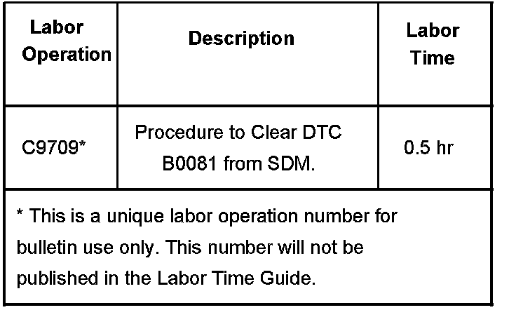

SRS - Air Bag Lamp ON/DTC B0081 Set
Bulletin No.: 07-09-41-002Date: January 29, 2007
TECHNICAL
Subject:
Air Bag Light On, DTC B0081 Set (Clear DTC Using Specific Procedure)
Models:
2007 Cadillac Escalade, Escalade ESV, Escalade EXT
2007 Chevrolet Avalanche, Silverado, Suburban, Tahoe
2007 GMC Sierra, Yukon, Yukon Denali, Yukon XL, Yukon Denali XL
Condition
Some customers may comment on the airbag light being illuminated. Upon investigation, the technician may find DTC B0081 with symptom code OF, 3A, 39 or 71 set.
Correction
The Sensing and Diagnostic Module (SDM) should NOT be replaced when DTC B0081 sets. The SDM sets DTC B0081 only to report that there is no communication with the Passenger Presence System (PPS) module or that the PPS module has reported a fault. It is important that when the B0081 fault is reported by the SDM, the DTCs from the PPS be retrieved and addressed first per the procedure below. After the PPS module DTCs have been addressed, turn the ignition off, open the driver's door, and wait 40 seconds for the PPS module to go to sleep.
When DTC B0081 71 sets, inspect wiring and connections for a possible loss of communication between the SDM and PPS module. Inspect front passenger seat connector to the PPS module and seat connector to the seat harness. Do not replace the SDM module for a DTC B0081 71 condition.
The SDM will set B0081 3A indicating that a wrong PPS module has been installed on the vehicle. Verify the condition before replacing the known wrong PPS module with a correct one. Use service information to reprogram and set up a new PPS module.
The SDM will set B0081 OF and B0081 39 indicating that the PPS module has reported a fault to the SDM. Retrieve the DTCs from the PPS module and address those first.
The PPS may continue to send it has a fault to the SDM for the above conditions, though there are no active faults reported by the PPS, until the steps in the note below are taken.
DTC B0081 will not clear until the low speed bus goes to sleep. To clear DTC B0081 turn the Ignition off, open the driver's door and wait 40 seconds for the PPS to go to sleep. Turn the ignition to run and retrieve vehicle DTCs. If all the codes have been cleared from the PPS, DTC B0081 in the SDM will not be active and only be in history.
Warranty Information

For vehicles repaired under warranty, use the table.

Disclaimer